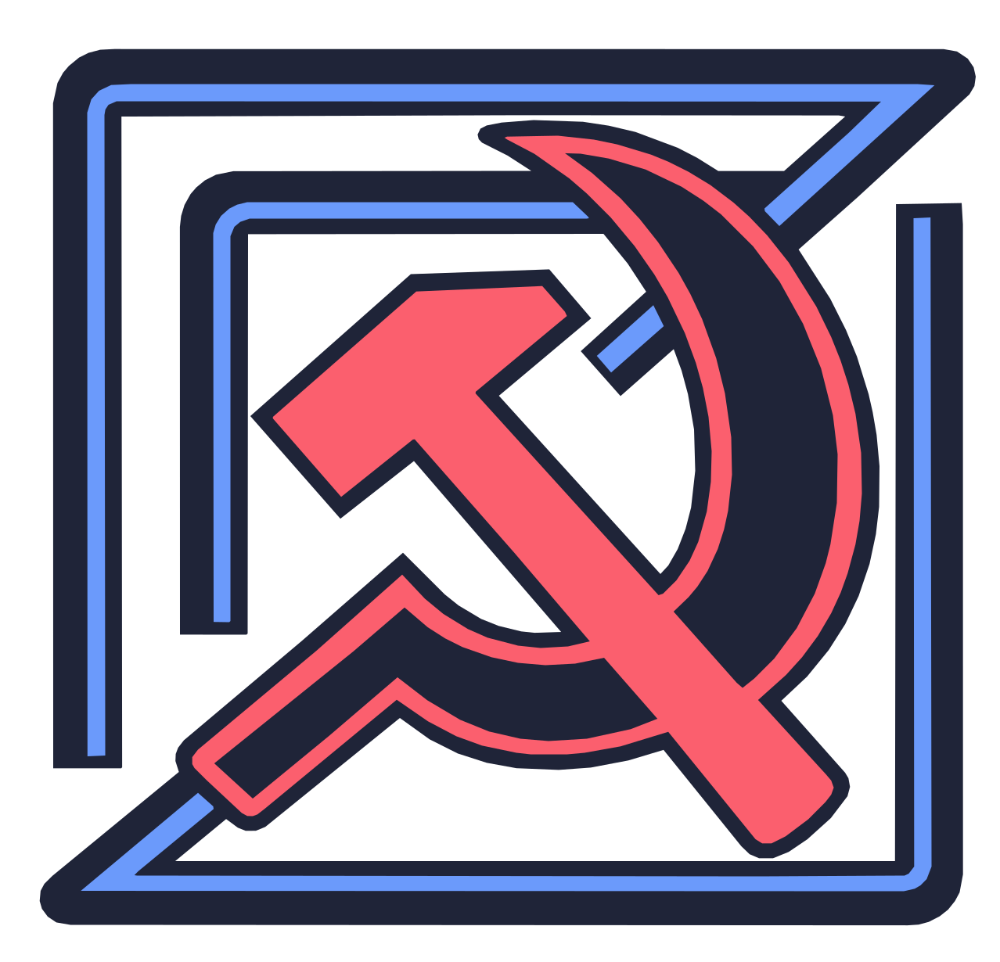

It started with scrolling.
The reason this fork exists? Smooth scrolling support. Sometimes you love an editor enough to fork it over how the buffer moves.

zedcccpCommunity spirit. Bleeding edge.
Built squarely on the backs of the Zed developers (thanks for doing all the hard work), ZedCCCP aims to integrate community features with zero regard for icky stuff like maintainability—or the upstream developers’ entirely reasonable opinions about how their project should be managed.
“I made this for smooth scrolling, tbh.”
01 / In your element
A familiar rhythm. A little less reaching for the mouse.
The reason this fork exists? Smooth scrolling support. Sometimes you love an editor enough to fork it over how the buffer moves.
Bleeding-edge experiments. Slop-forward feature testing. Expect rough edges, broken things, and ideas that don’t make the cut. This is not the stable lane.
Bring an idea. Try a patch. Tell us what broke. The hammer and sickle is a nod to the community spirit: tools we can tinker with, together.
02 / All the love to upstream
A massive shoutout to the entire Zed team and everyone contributing upstream. The speed, the care, the Rust and GPU-powered foundation: the hard work is yours. This playground only exists because you built something worth obsessing over.
Thank you for the long hours, the unglamorous fixes, and for putting that work into the open. Thank you for making an editor we love enough to mess with. Seriously, we can’t thank you enough.
This fork is a love letter with experimental patches, not a claim that we know better. ZedCCCP is independent, not affiliated with or endorsed by Zed Industries. For the upstream project rather than our ballpit, go straight to Zed.
Give the Zed team some loveBring curiosity. Expect breakage.